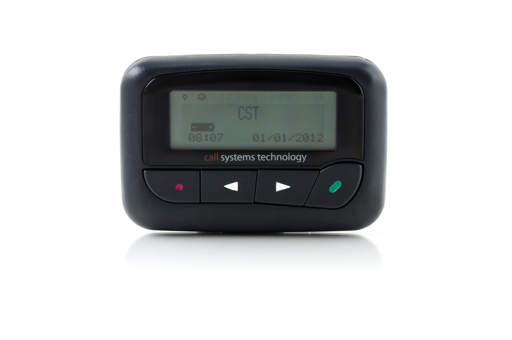

name: home layout: true class: center, middle, home --- name: image layout: true class: center, middle, image --- name: code2 layout: true class: code2 --- name: question layout: true class: center, middle, question --- template: home # From PR to Production # Charles O'Farrell # <cof@amazon.com> <img src="images/atlassian_logo.png" width="300px" /> <img src="images/amazon_logo.png" width="300px" /> ??? - Handy having named companies I've worked for --- layout: false <p style="position: absolute; left: 20%; top: 10%; color: black; font-size: 200%;"> print("hello world") </p> --- <img src="images/iceberg.jpeg" style="left:0px; top:0px; position: absolute;" height="100%" /> <p style="position: absolute; left: 20%; top: 10%; color: black; font-size: 200%;"> print("hello world") </p> --- template: image ??? - Disclaimer --- ## Questions <ul> <li>How do I get code to production?</li> <li>How do I make changes to production (safely)?</li> <li>How do I know my code in production is working?</li> </ul> --- ## Questions <ul class="questions"> <li>How do I get code to production?</li> <li>How do I make changes to production (safely)?</li> <li>How do I know my code in production is working?</li> <li class="focus">What is production?</li> </ul> --- template: image <p style="font-size: 100px;"> üôÇ </p> ??? - What is the purpose of production? - Production is where you make someone happy - Might be 1 million customers buying your production - Might be a handful of developers in the next cubicle --- template: image <p style="font-size: 100px;"> ‚ùÑÔ∏è </p> ??? - Every production is a snowflake, every job/company is different - Mobile/Embedded/Zip --- ## Questions <ul class="questions"> <li class="focus">How do I get code to production?</li> <li>How do I make changes to production (safely)?</li> <li>How do I know my code in production is working?</li> </ul> ??? - This section is _my_ experience --- template: code <code style="font-weight: bold"><pre> hello world </pre></code> --- template: code2 ``` * return "<b>hello world" ``` ??? - Fairly general process of code reaching production - How do you know it works? TEST! --- template: code2 ``` return "<b>hello world" * $ git commit -m "Production here we come" ``` ??? - Annecdote: in Uni no source control - Git is the standard - History is useful --- template: code2 ``` return "<b>hello world" $ git commit -m "Production here we come" * $ git push ``` --- template: code2 ``` return "<b>hello world" $ git commit -m "Production here we come" $ git push * $ git log --graph --oneline --all * * 93b762e (hello-production) Production here we come * * 2eeb407 Hello world (origin/main) ``` --- template: image ??? - Really powerful way to get/provide feedback - visibility - branch builds - validation - style - WARNING: not a gate --- template: image ??? - The more the merrier - Parallel - Annecdote - full AWS Lambda stack brought up and tested - Shift left - Often create draft CR to save time --- template: image <p style="font-size: 100px;"> üëç </p> --- template: image <p style="font-size: 100px;"> üëçüëç </p> --- template: image <img src="images/github_pr_merged.png" width="100%" /> --- template: code2 ``` $ git log --graph --oneline --all * * 46e1069 (origin/main) Merge pull request #2 |\ | * 93b762e (hello-production) Production here we come |/ * 2eeb407 Hello world ``` --- template: image <img src="images/docker_logo.webp" style="position: absolute; right: 0; bottom: 20px; width: 100px;" /> <img src="images/zip_logo.png" style="position: absolute; right: 100px; bottom: 20px; width: 100px;" /> --- template: image ??? - Is often easy to start from your build step - AWS CodeDeploy only works for lambda/ec2/ecs - In many places can often still be manual --- - https://aws.amazon.com/blogs/aws/code-management-and-deployment/ ??? - https://aws.amazon.com/blogs/devops/complete-ci-cd-with-aws-codecommit-aws-codebuild-aws-codedeploy-and-aws-codepipeline/ - rollbacks!!! --- template: image https://github.blog/2022-02-02-build-ci-cd-pipeline-github-actions-four-steps/ --- template: code ``` return "<b>hello world" ``` --- template: code2 ``` -return "<b>hello world" *+return "<i>hello world" ``` --- template: code ``` return "<i>hello world" $ git commit -m "Production here we come again..." ``` --- template: image <img src="images/cicd.svg" /> ??? - TODO definitions! --- ## Questions <ul class="questions"> <li class="focus">How do I get code to production? <ul> <li>Reviews (+ Checks) ✅</li> <li>Build ‚öíÔ∏è</li> <li>Deploy</li> <li>Pipelinesüö∞</li> </ul> </li> <li>How do I make changes to production (safely)?</li> <li>How do I know my code in production is working?</li> </ul> --- ## Questions <ul class="questions"> <li>How do I get code to production?</li> <li class="focus">How do I make changes to production (safely)?</li> <li>How do I know my code in production is working?</li> </ul> --- template: image ??? - plane - not grounding - errors --- template:code2 ```python * return "hello world" ``` --- template:code2 ```python - return "hello world" * + user = loadUser() * + return "hello " + user ``` ??? Scenario: Code review, all thumbs up, ship it Question: What could go wrong? --- template:code2 ```python - return "hello world" * + user = loadUser() * + return "hello " + user ``` <p class="emoji-right"> üëç </p> --- template:code2 ```python - return "hello world" * + user = loadUser() * + return "hello " + user ``` <p class="emoji-right"> üí£ </p> --- template:code2 ```python * return "hello world" * user = loadUser() * return "hello " + user ``` --- template:code2 ```python * flag = ... * if flag: return "hello world" else user = loadUser() return "hello " + user ``` <p class="emoji-right"> üö© </p> --- template:code2 ```python * from appconfig_helper import AppConfigHelper * flag = appconfig.config.myFlag == "true" if flag: return "hello world" else user = loadUser() return "hello " + user ``` --- template:image https://www.slideshare.net/AmazonWebServices/how-aws-minimizes-the-blast-radius-of-failures-arc338-aws-reinvent-2018 ??? - Blast radius --- template: image ??? - NOTE: Code is separate from deployment! --- template: image <img src="images/launch_darkly_rollout.avif" /> https://launchdarkly.com/blog/feature-flag-driven-development/ ??? - Example 1: TODO --- template:code2 ```python * if flag: * return "hello world" * else * * user = loadUser() * return "hello " + user ``` --- template:code2 ```python if flag: return "hello world" else * user = loadUser() return "hello " + user ``` <p class="emoji-right"> üí£ </p> --- template:code2 ```python if flag: return "hello world" else * try: user = loadUser() return "hello " + user * except: * print("Could not find user") return "hello world" ``` ??? - Graceful degredation - Netflix / Amazon website - Preserve core experience - Watch video or buy stuff! --- template:code2 ```python if flag: return "hello world" else try: user = loadUser() return "hello " + user except: * print("Could not find user") return "hello world" ``` ``` *2022-05-15 01:35:32 ERROR Could not find user ``` ??? - Annecdote: email to all devs, email filter --- template: image <p style="font-size: 100px;"> üë§ </p> ??? - shadow - more about side-effects/impacts --- template:code2 ```python * return "hello world" ``` --- template:code2 ```python * if flag: return "hello world" * * * * * * * else: * return "hello " + loadUser() ``` --- template:code2 ```python if flag == "control": return "hello world" * elif flag == "shadow": * validateUser(loadUser()) * return "hello world" else: return "hello " + loadUser() ``` --- template:code2 ```python if flag == "control": return "hello world" elif flag == "shadow": * try: validateUser(loadUser()) * except e: * print("Invalid user") return "hello world" else: return "hello " + loadUser() ``` --- template:code2 ```python * return "hello " + loadUser() ``` ??? - Amazon: reminder to delete --- template:image --- ## Questions <ul class="questions"> <li>How do I get code to production?</li> <li class="focus">How do I make changes to production (safely)? <ul> <li>Feature Flags/Toggles üö©</li> <li>Graceful Degradation (Try/Catch)</li> <li>Shadow mode(s) üë§</li> </ul> </li> <li>How do I know my code in production is working?</li> </ul> --- ## Questions <ul class="questions"> <li>How do I get code to production?</li> <li>How do I make changes to production (safely)?</li> <li class="focus">How do I know my code in production is working?</li> </ul> --- template:code2 ```python * * user = loadUser() * * return "hello " + user ``` ??? - Testing locally --- template:code2 ```python * * user = loadUser() * * return "hello " + user ``` <p class="emoji-right"> üí£ </p> --- template:code2 ```python * try: * user = loadUser() * * return "hello " + user * except: * * print("Could not find user") * return "error" ``` --- template:code2 <img src="images/angry_customer.jpeg" width="300px" style="position:absolute; bottom: 20px; right: 20px" /> ```python * try: * user = loadUser() * * return "hello " + user * except: * * print("Could not find user") * return "error" ``` --- template:code2 ```python try: user = loadUser() return "hello " + user except: * print("Could not find user") return "error" ``` ``` *2022-05-15 01:35:32 ERROR Could not find user ``` ??? - Anecdote: first job we used to email these exceptions to all devs --- template:code2 ```python try: user = loadUser() return "hello " + user except: * print("Could not find user") return "error" ``` ``` *2022-05-15 01:35:32 ERROR Could not find user *2022-05-15 01:36:21 INFO User logged in *2022-05-15 01:36:23 WARN Invalid access *2022-05-15 01:37:21 INFO User logged in *2022-05-15 01:35:32 ERROR Could not find user *2022-05-16 02:37:21 INFO More logging ``` --- template:code2 ```python try: user = loadUser() return "hello " + user except: * print("Could not find user") return "error" ``` ``` *2022-05-15 01:35:32 ERROR Could not find user 2022-05-15 01:36:21 INFO User logged in 2022-05-15 01:36:23 WARN Invalid access 2022-05-15 01:37:21 INFO User logged in *2022-05-15 01:35:32 ERROR Could not find user 2022-05-16 02:37:21 INFO More logging ``` --- template: image --- template:image ??? - https://aws.amazon.com/blogs/compute/operating-lambda-using-cloudwatch-logs-insights/ --- template: image <img src="images/angry_customer.jpeg" /> ??? - So what do we do for about the angry customer? --- template:image --- template: image ??? - Turns string matches in to numbers --- template: image <!-- https://cloudonaut.io/cloudwatch-is-neglected-why-is-the-control-room-empty/ --> --- template: image --- template:image  ??? - Email / Slack / Pager app - On-call - Can use cloudwatch to find what happened --- template:image --- template:code2 ```python * try: * user = loadUser() * * return "hello " + user * except: * * print("Could not find user") * return "error" ``` --- template:code2 ```python try: user = loadUser() return "hello " + user except: * metric.count("load_user.error", 1) print("Could not find user") return "error" ``` --- template:code2 ```python try: user = loadUser() * metric.count("load_user.first", user.isFirst) return "hello " + user except: metric.count("load_user.error", 1) print("Could not find user") return "error" ``` ??? - Logs can be noisy/expensive - Metrics at scale more useful than logs --- template: image ??? - Another benefit of metrics, can feedback in to your CD pipeline, rollback etc - And eventually you end up having lots of graphs - OE meeting - We have a weekely meeting where we walk through our most important graphs - Human pattern recognition --- ## Questions <ul class="questions"> <li>How do I get code to production?</li> <li>How do I make changes to production (safely)?</li> <li class="focus">How do I know my code in production is working? <ul> <li>Logging ü™µ + Query üîç</li> <li>Metrics üìà</li> <li>Dashboards</li> <li>On-call üö® + Tickets</li> <li><a href="https://sre.google">https://sre.google</a></li> </ul> </li> </ul> --- ## Questions <ul> <li>How do I get code to production? ✅ ‚öíÔ∏èüö∞</li> <li>How do I make changes to production (safely)? üö©üë§</li> <li>How do I know my code in production is working? ü™µüîçüìàüö®</li> </ul> <h3 style="position: absolute; bottom: 1px;"> <a href="#">https://charleso.github.io/pr-to-production-talk</a> </h3> --- exclude: true layout: false ## Links - Release It https://www.oreilly.com/library/view/release-it-2nd/9781680504552/ - https://aws.amazon.com/builders-library/ - https://launchdarkly.com/blog/feature-flag-driven-development/